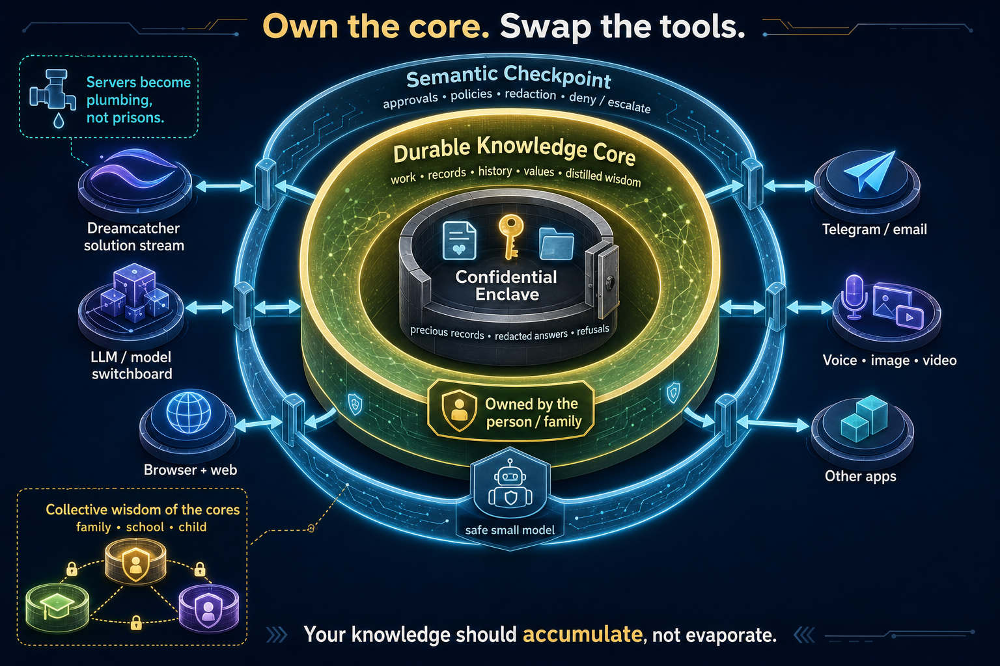

Disconnected, abandoned, outside the container.
- Work marooned in school portals, SaaS tools, inboxes and drives.
- Decisions and lessons lose provenance as people move on.
- The application’s server becomes the place where your knowledge is useful.
Durable knowledge cores
Dreamcatcher gives each person, family, school, or company an owned durable core: a protected place where work, records, history, values, and distilled wisdom can keep becoming useful.
Private pilots are open. Email is the current intake path; Telegram, WhatsApp and phone channels are being opened in stages.

The posture
Most software scatters your life across rented silos. Dreamcatcher starts from the opposite assumption: your working knowledge should have a durable home, guarded by policy, backed up, portable, and able to improve over time.
Servers still move packets, keep backups and stream capability. They do not need to own your work.
Intentional knowledge concentration
A child moving through school, an adult moving through work, a founder moving through customers — each leaves breadcrumbs everywhere. Unintentional sprawl makes that knowledge less valuable and less controlled. A durable core gathers it on purpose.
The owned architecture
The owned working home: knowledge, records, history, workflows, policies, values and distilled wisdom.
A protected inner room for precious records. It can answer, redact or refuse without handing raw material to the rest of the system.
The active boundary: approvals, policies, redaction, denial, escalation and a conservative safety model.
Dreamcatcher, LLMs, browser, Telegram, email, voice, image, video and apps can plug in without taking the core with them.
Personal software
Personal computers gave us private compute, but most software remained one-size-fits-millions. Dreamcatcher streams tested, purpose-built software into the core so the app can change around the person instead of making the person fit the server.
Safety boundary
The semantic checkpoint can be transparent for safe operations, ask for approval when consequence is high, redact what should not leave, explain why something was blocked, and escalate when policy is uncertain.
Families, schools and teams
A family is a team of knowledge cores. Parents can build values, records and lived judgment into their own cores, grant children safe access, and help school knowledge work with family wisdom without dumping everyone’s private life into one pot.
Parent cores, child cores and family history become a governed wisdom stream: inherited, permissioned, age-appropriate and challengeable.
A school-operated core can preserve learning history, strengths and feedback without turning childhood into a cloud-owned dossier.
Small private groups can reason with shared history, culture, values and decisions through redacted, auditable interaction among owned cores.
Why Dreamcatcher
Dreamcatcher is the network beyond the checkpoint: redacted problems in, tested solutions out, with provenance and attribution for reusable work. The core stays yours; Dreamcatcher keeps it learning at the edge.
Published decks
Dreamcatcher decks start as knowledge seeds, then become public-safe Reveal.js decks with previews, topics and links. Use them like working memos: fast to skim, concrete enough to discuss.

One-slide pilot briefs for validating the minder/conscience, containment, wellbeing signals, custody, learning and economics.
Open deck
Enduring agents, adult-first pilots, simulated child cores, and the wisdom a school can keep building.
Open deckThe old world makes the user a cross-cutting concern. The new world makes the user the core.
Open deckPilot channels
Tell us what knowledge is scattered, what should be protected, and what personal software would make it useful.
Message your agent in Telegram, send files and voice notes, and keep the working knowledge in one durable core.
A real phone number for urgent handoffs, spoken instructions, and agent-mediated follow-up. Number allocation is in rollout.
Prefer not to drive the setup? Request a callback and we will help define the core, checkpoint and pilot path with you.
Give the agent a familiar mobile surface for family, school, supplier or customer coordination.
Private pilots are open
Start with one person, family, school, or team. Choose what belongs in the core, what must stay in the enclave, and which services are allowed through the checkpoint.
Talk to an agent